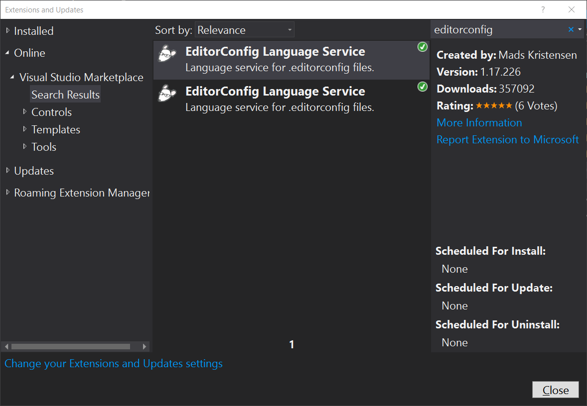
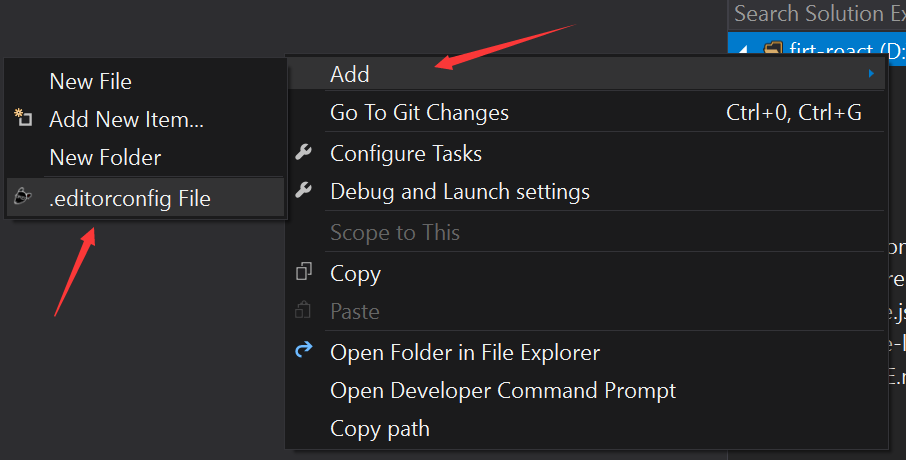
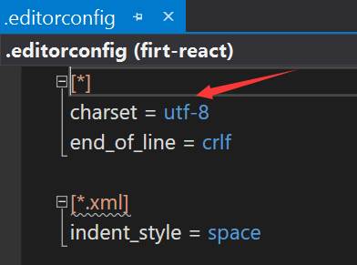

vs2017支持.editorconfig配置
visual studio无法全局设置编码，新建的文件有的时候并不是使用utf-8编码的，所有在有的环境下会出现乱码。比如使用babel转嘛js代码的时候。网上找到的解决方案，下载ForeUTF8插件并不能解决问题，当我们新建文件的时候，还要一个个手动通过高级保存，保存为我们想要的编码。所幸百般查找，发现vs是可以支持.editorconfig配置文件的。
安装EditorConfig Language Service扩展
如下图所示：(从扩展工具安装)

然后在项目的文件夹下，就能通过右键新建.editorconfig文件，并且编辑的时候有智能提示。

如下，设置当前文件夹（或者解决方案）所有编码为utf-8

可以通过官方网站了解更加详细的.editorconfig的设置
官网: editorconfig